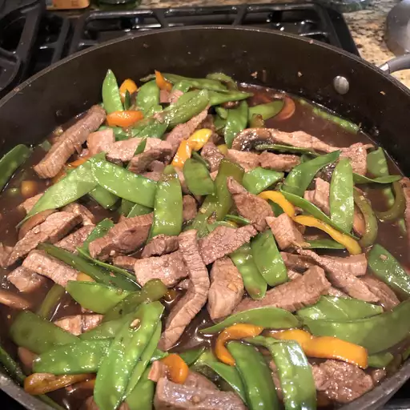

Asian Beef with Snow Peas
Home

Description
This is probably the simplest stir fry someone could make. Minimal ingredients, and only a couple minuites of prep work. Easy for weekday meals. You know the vibes
ingredients
- 3 tbsp soy sauce
- 2 tbsp rice wine
- 1 tbsp brown sugar
- 1/2 tsp cornstarch
- 1 tbsp veg oil
- 1 tbsp ginger
- 1 tbsp garlic
- 1 pound beef round steak
- 8 ounces of snow peas
Steps
- In a small bowl, combine the soy sauce, rice wine, brown sugar and cornstarch. Set aside.
- Heat oil in a wok or skillet over medium high heat. Stir-fry ginger and garlic for 30 seconds. Add the steak and stir-fry for 2 minutes or until evenly browned.
- Add the snow peas and stir-fry for an additional 3 minutes. Add the soy sauce mixture, bring to a boil, stirring constantly.
- Lower heat and simmer until the sauce is thick and smooth. Serve immediately.